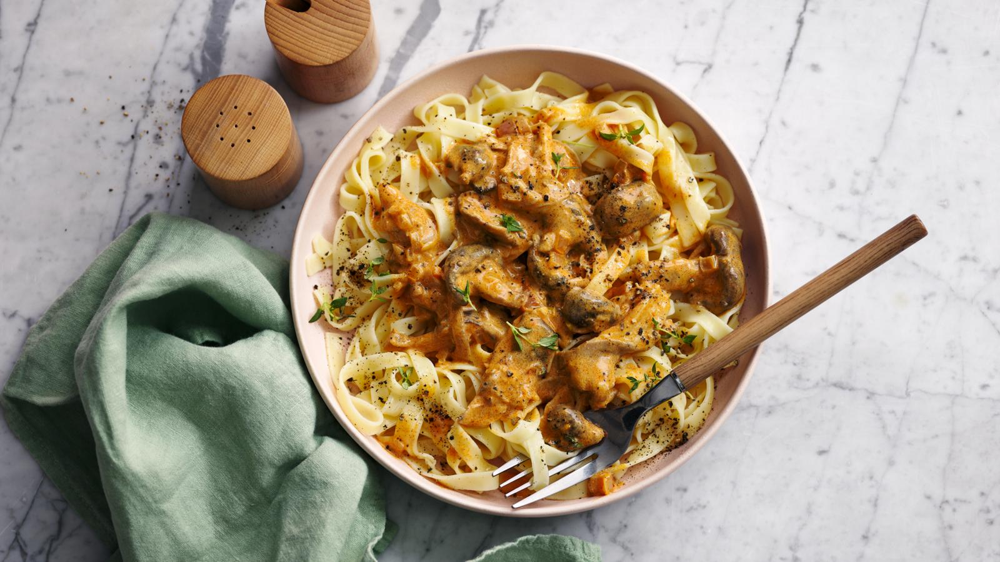

Vegan Mushroom Stroganoff

About this Recipe
This vegan mushroom stroganoff is served with a flat ribbon pasta, such as pappardelle or fettuccine. It’s rich and full of flavour and quick to cook – ideal for a midweek supper.
Ingredients
- 160g/5¾oz dried pappardelle or fettuccine pasta
- 1 tsp olive oil
- 3 shallots, peeled and finely diced
- 3 garlic cloves, finely chopped
- 180g/6⅓oz mixed mushrooms (such as oyster, shiitake, maitake, eryngii) or brown mushrooms, roughly chopped
- 2 tbsp vegan ‘butter’
- 2 tsp smoked paprika
- ½ tsp Dijon mustard
- 1 tsp tamari
- 125ml/4fl oz vegetable stock
- 125ml/4fl oz plant-based crème fraîche or single cream alternative
- ½ lemon, juice only
- salt and freshly ground black pepper
- 2 fresh thyme sprigs, to garnish
Method
- Cook the pasta in a large saucepan of salted boiling water according to the packet instructions, until al dente.
- Heat the olive oil in a large frying pan, add the shallots and fry for 5 minutes. Add the garlic and fry for 1 minute.
- Add the mushrooms and butter and cook for 5 minutes. Stir in the smoked paprika, mustard and tamari. Pour in the stock and cook for a few minutes, then turn the heat down as low as possible.
- Mix the crème fraîche with the lemon juice, then spoon into the mushroom mixture and slowly stir through (the heat should be at the absolute minimum to prevent the cream from separating). Season with salt and pepper to taste.
- Drain the pasta and serve in two bowls. Top with the mushroom stroganoff and garnish with thyme.